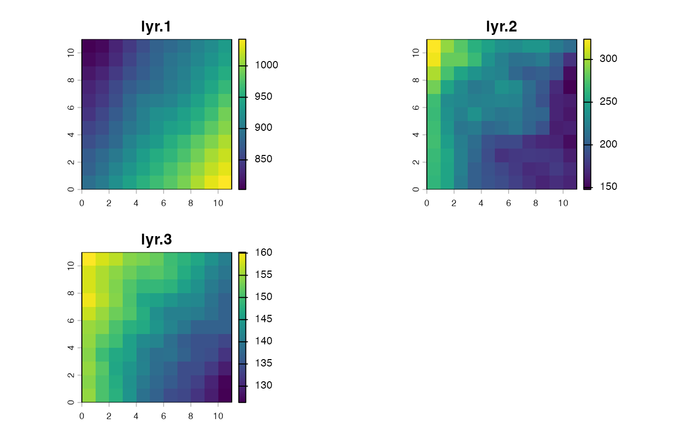

Creates sample data for Convolutional Neural Network
Source:R/cnn_make_samples.R
cnn_make_samples.RdThis function creates an array of input images and associated responses which can be utilized to train a Convolutional Neural Network.
Usage
cnn_make_samples(
data,
x,
y,
response,
raster,
raster_padding = FALSE,
padding_method = NULL,
size = 5
)Arguments
- data
data.frame or tibble. Database that includes longitude, latitude, and response columns.
- x
string. Specifying the name of the column with longitude data.
- y
string. Specifying the name of the column with latitude data.
- response
string. Specifying the name of the column with response.
- raster
SpatRaster. Raster from which predictor data will be cropped.
- raster_padding
logical. If TRUE, the raster will be padded when cropping extends beyond its boundaries. Useful for ensuring all focal cells have the same size output even at the edges of the raster. Default FALSE
- padding_method
string or NULL. Method used for padding the raster if raster_padding is TRUE. Options are "mean", "median", "zero". Ignored if raster_padding is FALSE. Default NULL
- size
numeric. Size of the cropped raster, number o cell in each direction of a focal cell
Value
A list with two elements - 'predict' (a list of input images) and 'response' (an of response values). Each element in the 'predictors' list is an array representing a cropped image from the input raster.
Examples
# \donttest{
require(dplyr)
require(terra)
# Load data
envar <- system.file("external/envar.tif", package = "adm") %>%
rast()
data("sppabund")
some_sp <- sppabund %>%
filter(species == "Species one")
cnn_samples <- cnn_make_samples(
data = some_sp,
x = "x", # x coordinates for each point
y = "y", # y coordinates for each point
response = "ind_ha",
raster = envar[[c("bio12", "sand", "elevation")]],
size = 5 # how many pixels from point to border?
)
length(cnn_samples$predictors) # 938 matrix sets
#> [1] 938
dim(cnn_samples$predictors[[1]]) # three 11x11 channels
#> [1] 11 11 3
cnn_samples$predictors[[1]] # representing predictor variables
#> , , bio12
#>
#> [,1] [,2] [,3] [,4] [,5] [,6] [,7] [,8] [,9]
#> [1,] 802.838 808.967 828.594 845.690 862.625 877.790 885.878 895.7950 908.339
#> [2,] 807.953 816.198 833.677 852.528 867.688 881.162 894.061 901.7070 913.445
#> [3,] 817.966 827.494 843.650 860.660 872.825 885.607 898.205 906.5400 921.686
#> [4,] 827.614 838.307 855.957 873.674 882.593 890.656 901.934 913.0670 929.393
#> [5,] 833.219 845.296 862.517 883.290 899.482 904.035 911.205 923.5420 940.845
#> [6,] 840.811 853.260 870.440 887.550 906.044 920.945 926.770 938.2560 949.734
#> [7,] 851.661 860.907 879.748 898.679 910.296 925.442 938.526 946.2310 962.286
#> [8,] 861.882 871.002 886.683 910.277 924.581 933.219 952.295 965.6260 980.299
#> [9,] 872.410 886.184 900.303 917.841 936.907 949.130 960.666 973.4420 990.378
#> [10,] 878.787 892.817 911.183 929.059 943.272 958.010 972.263 986.8550 1002.995
#> [11,] 889.544 903.292 922.164 941.022 954.158 967.007 979.560 994.1479 1013.069
#> [,10] [,11]
#> [1,] 920.053 934.349
#> [2,] 927.111 941.732
#> [3,] 935.043 951.226
#> [4,] 945.347 961.447
#> [5,] 958.621 976.756
#> [6,] 967.786 990.069
#> [7,] 980.784 997.451
#> [8,] 996.618 1012.557
#> [9,] 1009.093 1022.770
#> [10,] 1019.177 1031.817
#> [11,] 1031.324 1042.586
#>
#> , , sand
#>
#> [,1] [,2] [,3] [,4] [,5] [,6] [,7] [,8]
#> [1,] 323.6941 294.7756 276.7231 258.6481 249.3895 236.9979 232.5712 239.5818
#> [2,] 318.4454 282.5389 282.6850 266.2378 239.1768 224.1918 213.3185 214.7108
#> [3,] 301.7150 271.9843 251.0643 238.5831 230.4549 226.8542 206.9613 197.9787
#> [4,] 285.7474 249.9197 231.3249 218.5245 222.5039 237.0598 230.7322 210.7647
#> [5,] 268.0114 233.5496 230.3769 224.8472 226.3653 228.5308 226.8357 209.2088
#> [6,] 266.7217 236.8561 223.6430 236.1223 222.2937 216.8967 219.1638 206.0938
#> [7,] 267.7408 239.8533 217.5965 220.6808 206.2489 210.0489 216.5722 204.1752
#> [8,] 270.6972 245.8227 222.6527 210.7542 192.8077 187.4747 186.5412 174.0954
#> [9,] 266.6864 252.3928 224.1620 206.7325 189.2622 173.1911 177.0700 179.4060
#> [10,] 265.2602 249.9310 223.7477 202.2854 192.0435 184.8542 179.0631 169.5506
#> [11,] 263.8184 251.1419 220.4428 202.1964 193.6808 189.4042 181.7933 172.5262
#> [,9] [,10] [,11]
#> [1,] 240.3530 221.5458 209.9458
#> [2,] 220.5592 200.3471 172.7042
#> [3,] 202.1252 193.5226 154.0340
#> [4,] 196.5667 170.3566 147.7815
#> [5,] 193.1667 165.8647 163.1308
#> [6,] 205.0498 166.1343 159.1493
#> [7,] 193.0397 162.7033 163.6378
#> [8,] 168.6706 167.1084 154.3853
#> [9,] 177.3993 174.9158 162.2080
#> [10,] 171.4749 178.4732 169.0149
#> [11,] 165.9639 171.1086 165.5527
#>
#> , , elevation
#>
#> [,1] [,2] [,3] [,4] [,5] [,6] [,7] [,8]
#> [1,] 160.2064 157.8758 156.5414 153.9792 153.2733 152.2813 149.4811 148.3174
#> [2,] 158.0649 156.0323 154.4119 152.5727 150.9236 151.2927 150.0134 147.1337
#> [3,] 157.9999 156.0471 153.5946 150.9868 148.8929 148.8825 148.0686 145.5205
#> [4,] 159.2546 156.6284 154.0268 150.6498 146.5647 145.6614 143.9781 142.4431
#> [5,] 157.4605 154.9460 152.6915 150.8062 147.4920 143.0008 141.0518 140.9928
#> [6,] 155.0929 153.8401 150.3845 147.9261 146.6643 144.1770 141.6326 139.5923
#> [7,] 154.7157 151.4120 149.3949 145.5323 142.4875 141.8800 138.5630 136.2642
#> [8,] 154.0592 149.6503 146.8942 145.5834 141.0187 138.7971 139.0075 136.9624
#> [9,] 154.6649 151.1506 146.4789 144.0058 141.3016 138.4157 136.8261 134.3743
#> [10,] 153.8999 150.4387 147.2578 143.2834 139.9646 137.6269 136.0478 134.4441
#> [11,] 154.5030 150.6051 147.7185 143.6771 139.1083 136.8613 134.4441 133.4532
#> [,9] [,10] [,11]
#> [1,] 146.3409 143.3547 140.5644
#> [2,] 144.8442 141.6464 139.5549
#> [3,] 143.5724 140.4271 138.3337
#> [4,] 142.1358 139.2160 136.8360
#> [5,] 140.3583 138.6406 137.0702
#> [6,] 136.9433 136.9760 136.8540
#> [7,] 135.0484 135.0333 133.4777
#> [8,] 134.9185 134.4216 131.6734
#> [9,] 134.2206 132.2392 129.2876
#> [10,] 132.9516 129.9190 126.9211
#> [11,] 131.6458 129.2512 126.3157
#>
rast(cnn_samples$predictors[[1]]) %>% plot()

cnn_samples$response[[1]] # linked to a label
#> [1] 10
# }